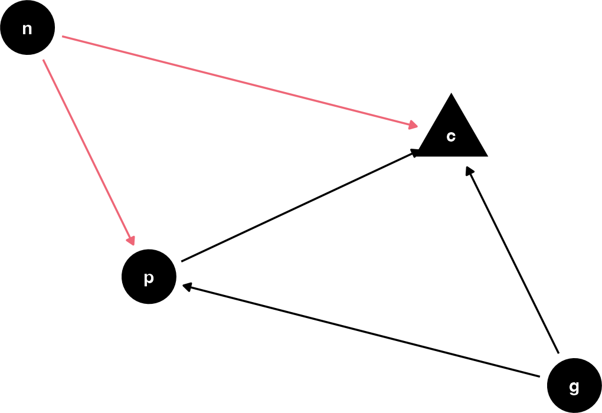

Developing a sense for colliders
For me to really get a sense of how coliders work, I’m going to have to simulate a few different datasets, messing around with the parameters, and compare the outcomes. I won’t do this full Bayesian for the sake of speed. As a reminder, here’s the DAG. I’ll specifically be messing around with the effect of n on p and c.
Code
dagify (~ p + g + n,~ g + n|> tidy_dagitty () -> |> mutate (from_n = ifelse (name == "n" , ptol_red, "black" )|> ggplot (aes (x = x, y = y, xend = xend, yend = yend)) + geom_dag_point (aes (shape = name == "c" + geom_dag_edges (aes (edge_color = from_n+ geom_dag_text ()+ scale_color_manual (values = c ("grey60" , ptol_red)+ guides (shape = "none" ,color = "none" + theme_dag ()

Figure 1: DAG with a collider
I refactored the code from before into a function:
simulation function
<- function (n = 200 ,# Grandparent on parent b_GP = 1 ,# Parent on Child b_PC = b_GP,# Grandparent on Child b_GC = 0 ,# neighborhood b_N = 2 ){tibble (grandparent = rnorm (n),neighborhood = rbinom (size = 1 , prob = 0.5 parent = rnorm (mean = b_GP * grandparent + * neighborhoodchild = rnorm (mean = b_GC * grandparent + * parent + * neighborhood-> return (haunted_sim)
And I’ll do a grid of 100 values from -11 to 11 for b_N.
tibble (n = 200 ,b_GP = 1 ,b_PC = 1 ,b_GC = 0 ,b_N = rep (seq (- 11 , 11 , length = 100 ), 10 )->
Now, with some tidyverse fanciness, I’ll map the simulation function I wrote across each row to get simulation datasets.
Simulating the data with pmap
|> rowwise () |> mutate (data = pmap (list (n, b_GP, b_PC, b_GC, b_N),|> ungroup ()->
Then, for each data set I’ll fit
lm(child ~ parent + grandparent)and then get the parameters.
Fitting a model for each simulation
|> mutate (model = map (~ lm (child ~ parent + grandparent, data = .x)params = map (model, broom:: tidy)|> unnest (params) |> select (starts_with ("b_" ),->
Code
<- tibble (term = c ("(Intercept)" , "grandparent" , "parent" ),estimate = c (0 , 0 , 1 )|> ggplot (aes (+ geom_hline (data = true_params,aes (yintercept = estimatecolor = "grey40" + stat_summary (fun.y = mean,geom = "line" + facet_wrap (~ term)+ labs (caption = "b_GC = 0; b_GP = 1; b_PC = 1"
Figure 2: Collider effect
Huh. I guess I wasn’t expecting an asymptotic relationship for the grandparent and parent effects? It looks like as b_N gets large, the collider confounding reaches some kind of min/max, which for grandparent is -1, and for parent is 1. I don’t know if this value relates to either the effect of b_GP or b_PC, since both were set to 1? Maybe time for another grid search. I’ll really max outt the b_N effect to get fully into the tail of the asymptote.
expand_grid (n = 200 ,b_GP = rep (- 2 : 2 , 10 ),b_PC = rep (- 2 : 2 , 10 ),b_GC = 0 ,b_N = 50 |> rowwise () |> mutate (data = pmap (list (n, b_GP, b_PC, b_GC, b_N),|> ungroup () |> mutate (model = map (~ lm (child ~ parent + grandparent, data = .x)params = map (model, broom:: tidy)|> unnest (params) |> select (starts_with ("b_" ),->
Code
|> filter (!= "(Intercept)" |> ggplot (aes (+ stat_summary (fun.y = mean,geom = "line" + scale_x_continuous (breaks = c (- 2 , 0 , 2 )+ scale_y_continuous (breaks = c (- 2 , 0 , 2 )+ facet_grid (term~ b_PC, labeller = label_both)+ theme (aspect.ratio = 1 ,strip.text.y = element_text (size = 8 )+ labs (caption = "b_GC = 0; b_N = 50"
Figure 3: Collider effect
Huh. The associations look straightforward, but I think I need an animation to get it.
This turned into a whole thing.
Code
library (gganimate)= 100
Code
<- function (x, min.v = - 2 , max.v = 2 , scale = color ("berlin" )(100 )){= (x - min.v)/ (max.v- min.v)= round (prop * (length (scale)- 1 ))+ 1 return (scale[closest_idx])
Code
tibble (name = "p" ,to = "c" ,true = 1 ,est = true + 1 ,id = seq (- 2 , 2 , length = nframes),col = color_value (true)|> bind_rows (tibble (name = "g" ,to = "c" ,true = 0 ,est = seq (2 , - 2 , length = nframes),id = seq (- 2 , 2 , length = nframes),col = color_value (true)|> bind_rows (tibble (name = "g" ,to = "p" ,true = seq (- 2 , 2 , length = nframes),est = NA ,id = seq (- 2 , 2 , length = nframes),col = color_value (true)|> bind_rows (tribble (~ name, ~ to, ~ true, ~ est,"n" , "c" , NA , NA ,"n" , "p" , NA , NA ,"c" , NA , NA , NA |> mutate (across (true: est, as.numeric),col = "#000000" |> group_by (name, to, true, est, col) |> reframe (id = seq (- 2 , 2 , length = nframes)-> tibble (name = "p" ,to = "c" ,true = 1 ,est = true + 1 ,id = seq (- 2 , 2 , length = nframes),col = color_value (est)|> bind_rows (tibble (name = "g" ,to = "c" ,true = 0 ,est = seq (2 , - 2 , length = nframes),id = seq (- 2 , 2 , length = nframes),col = color_value (est)->
Code
|> left_join (the_dag |> as_tibble ()) -> |> left_join (the_dag |> as_tibble ()) ->
Code
|> ggplot (aes (x = x, y = y, xend = xend, yend = yend)) + geom_dag_point (color = "grey" ,+ geom_dag_text ()+ geom_segment (arrow = arrow (type = "closed" , length = unit (0.2 , "cm" )),linewidth = 1 ,aes (color = col+ geom_segment (data = est_dag,linetype = "dashed" ,aes (x = x+0.1 , y = y+0.1 , xend = xend+0.1 , yend = yend+0.1 ,color = colarrow = arrow (type = "closed" , length = unit (0.2 , "cm" )),linewidth = 1 + scale_color_identity ()+ transition_time (+ labs (title = "b_GP: {round(frame_time, digits = 2)} \n est_GC: {round(frame_time*-1, digits = 2)}" + theme_dag ()-> aanimate (a, rewind = T) |> anim_save (filename = "dag_anim.gif"
So, as the true effect of Grandparents on parents changes, the estimated direct effect on children is inversely proportional, and, for some reason, the direct effect of parents is just +1?